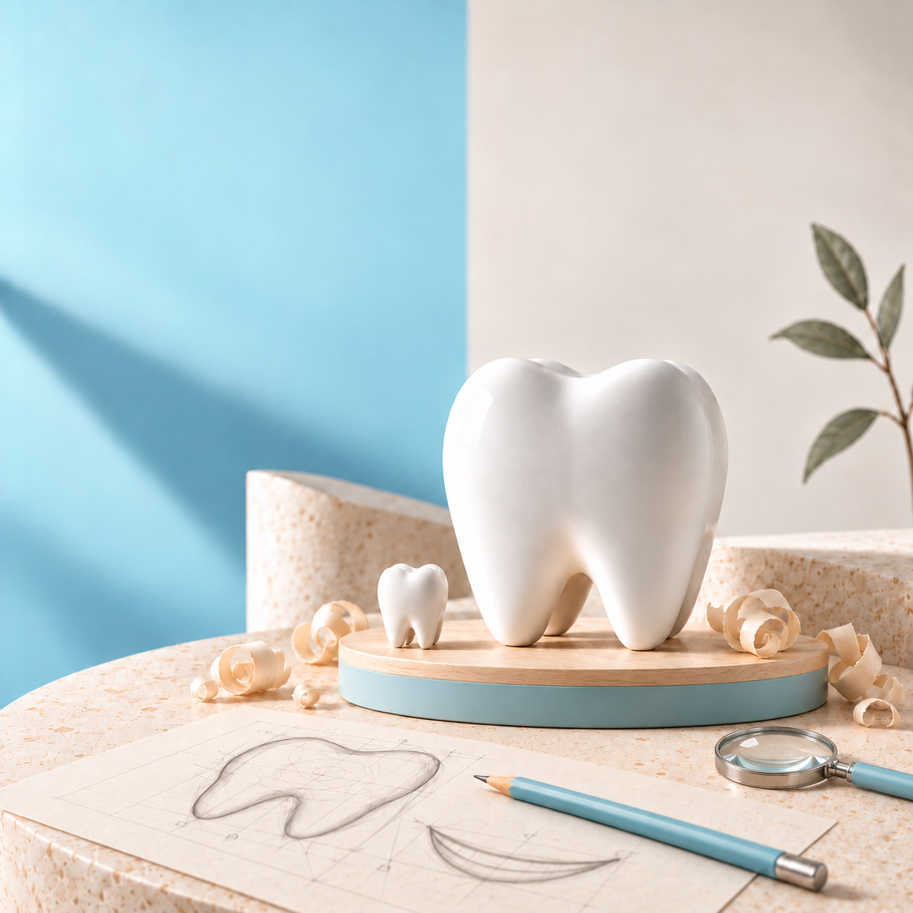

Наш опыт
10+ летОпыт в протезировании и восстановлении зубов
Лечение зубов, профессиональная гигиена,
протезирование и имплантация.

Опыт в протезировании и восстановлении зубов
Здесь важно не просто вылечить зубы, а понять пациента, объяснить возможности и вместе выбрать подходящее решение.

Лечение зубов · Эндодонтия · Протезирование
Выслушает, объяснит варианты лечения и поможет принять решение без спешки.
Что беспокоит, пожелания и прошлый опыт лечения.
Учитываем здоровье, при необходимости — диагностика.
Варианты, этапы и стоимость — простым языком.
План, который подходит именно вам.
Для взрослых — лечение и профилактика, для старшего поколения — сохранение зубов и восстановление жевательной функции. Детский приём, специалиста и допустимый возраст уточните у администратора.
Записаться на консультациюЛечение, протезирование, имплантация и профессиональная гигиена. Выберите направление и посмотрите стоимость основных услуг.
Сохраняем свои зубы как можно дольше. Лечим кариес, его осложнения и восстанавливаем повреждённые зубы.
Восстанавливаем жевательную функцию и эстетику улыбки. Ведёт Тимур Гаджиев, опыт более 10 лет.
Возвращаем утраченные зубы. Обследования и этапы восстановления обсуждаем на консультации.
Удаляем налёт и отложения, проводим профессиональную чистку. Даём рекомендации по домашнему уходу.
Стоимость гигиены уточните у администратора при записи.
Точная стоимость определяется после осмотра — план, этапы и цену обсуждаем заранее.
Фотографии результатов лечения из галереи клиники.
Нажмите на кейс, чтобы подробнее рассмотреть результат.
Чтобы записаться в «Мастерскую улыбок», позвоните +7 (922) 444-77-39 или напишите в WhatsApp. Сообщите, что вас беспокоит или какая услуга нужна, и удобное время приёма. Администратор уточнит детали и предложит время записи. Клиника находится по адресу: Сургут, ул. Губкина, 18.
Да, консультация врача в «Мастерской улыбок» бесплатная. При записи уточните, что входит в консультацию, понадобятся ли снимки и сколько стоит дополнительная диагностика. На приёме можно обсудить вашу ситуацию, возможные варианты лечения и вопросы о стоимости.
Пломба помогает восстановить зуб, повреждённый кариесом. Если зуб сильно разрушен, врач может предложить коронку, которая покрывает его и восстанавливает форму. Выбор зависит от объёма сохранившихся тканей и состояния зуба. На осмотре стоматолог объяснит, какой вариант подходит в вашей ситуации и потребуется ли лечение корневых каналов. Подробнее о направлениях — в разделах «Лечение зубов» и «Протезирование».
Сначала врач уточняет, что вас беспокоит, ваши пожелания и прошлый опыт лечения. Затем проводит осмотр и при необходимости обсуждает дополнительную диагностику. После этого объясняет возможные варианты, этапы и стоимость лечения. Подробнее — в блоке «Первый визит». Если вы волнуетесь перед приёмом, сообщите об этом при записи и врачу.
Да. В клинике протезированием занимается Тимур Гаджиев, его опыт в этом направлении — более 10 лет. На консультации можно обсудить восстановление зубов коронками и съёмными протезами. Подходящий вариант и стоимость врач определяет после осмотра. Посмотрите услуги протезирования и цены, затем запишитесь на консультацию.
Имплант устанавливают в кость челюсти: он служит опорой для будущего зуба. Коронка — видимая часть конструкции, которая восстанавливает форму зуба и участвует в жевании. План имплантации составляют после осмотра и необходимых обследований. На консультации можно узнать, подходит ли вам этот способ восстановления, какие этапы предстоят и какие есть альтернативы. Сроки зависят от вашей ситуации; восстановление может потребовать нескольких посещений. Подробнее — в разделе «Имплантация зубов».
Возможность детского приёма, допустимый возраст и доступные процедуры уточните у администратора до записи. Сообщите возраст ребёнка и причину обращения, чтобы узнать, можно ли записаться с вашей задачей.
Доступны наличные, банковская карта и перевод. Гарантийные условия зависят от вида лечения и используемых конструкций; врач объяснит их до начала лечения. Детали оплаты уточните у администратора при записи.
Беспокоит зуб, нужна коронка или давно откладываете лечение?
Расскажите об этом врачу и задайте свои вопросы.
Сургут, ул. Губкина, 18 · вход со стороны улицы, рядом парковка